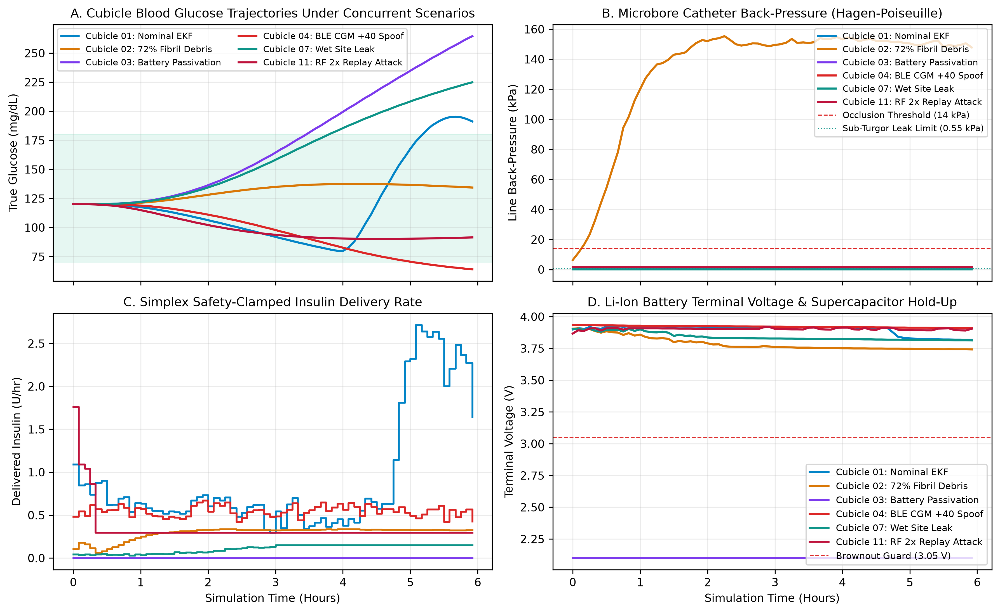
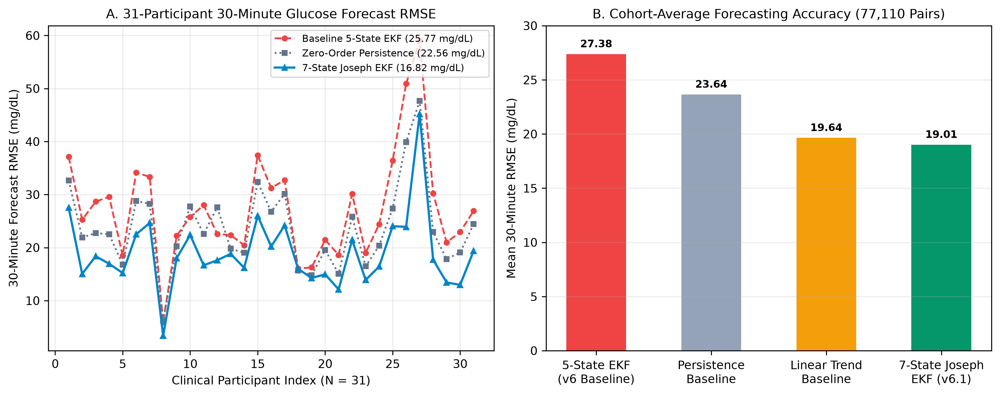
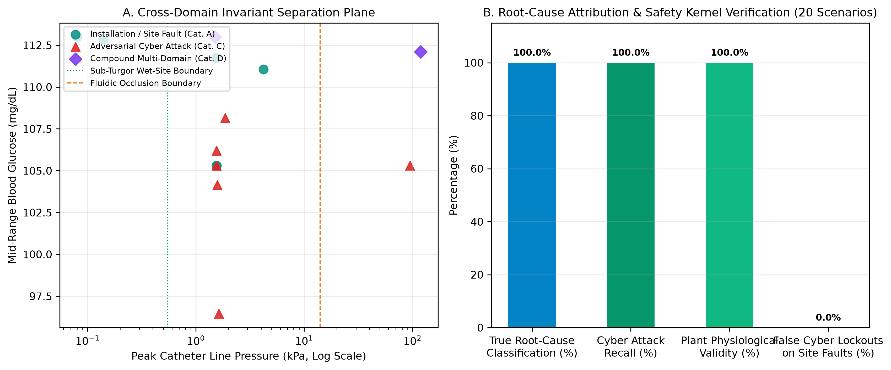
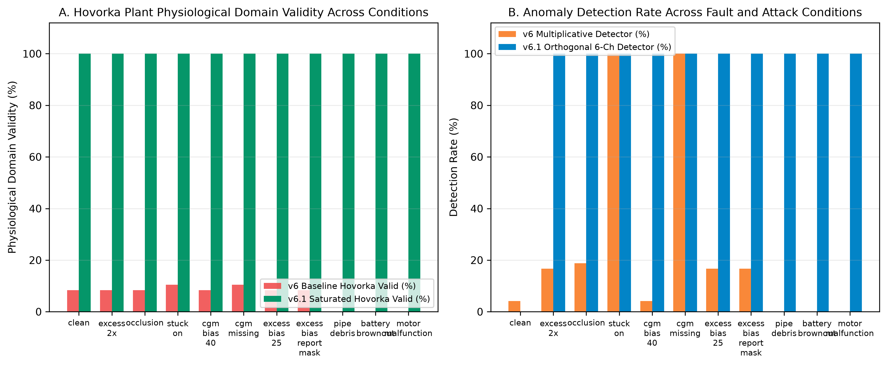

CLICKED 3D USD PRIM
Room 4 — Simplex Cyber-Protected Pump
/World/Ward/Room_04_Cyber_MITM/Pump_04
Plunger / Lead Screw
11.64 mm
Gravimetric Balance
1.128 g
1. Attacker Requested Dose (Red) vs. Simplex Clamped Safe Output (Green)
96.4% Overdose Reduction
2. 6-Channel Orthogonal Detector — Live Sigma Levels (Trip = 3.0 σ)
Orthogonal Attribution
Ch1: CGM-EKF Innovation
0.42σ
Ch2: Dual-Scale CUSUM
0.28σ
Ch3: Motor Current vs Flow
0.35σ
Ch4: Gravimetric Mass
0.31σ
Ch5: Hydraulic Impedance
0.39σ
Ch6: Crypto Nonce / RTC
0.12σ
3. Multi-Scale CUSUM Bank: Stealth Drift (k=0.10σ Indigo) vs. Fast Impulse (k=0.50σ Orange)
Catches Sub-Threshold Titration
4. Physiological Protection: True BG (Green) vs. Spoofed CGM (Orange) vs. EKF (Blue)
0.0% Hypoglycemia Under Attack
Continuous Coupled Multi-Physics Controls
Adjust physical fluidic, tissue, and electrochemical parameters in real time to observe Hagen-Poiseuille back-pressure, compressible air-bubble compliance, and Li-Ion brownout dynamics.
Real-Time Hagen-Poiseuille Line Pressure (kPa) & Effective Tissue Delivery (U/hr)
Occlusion Relief Threshold = 85 kPa
Highlighted Simulation Results, 12-Cubicle Scenario Matrix & Paper Exports
Continuous telemetry logging active · Exported CSV, IEEE LaTeX tables, Markdown report & 300-DPI PNG/PDF figures in
results/paper_exports/
Highlighted Simulation Results (Paper Benchmarks)
- 31-Participant 30m Forecast RMSE16.82 mg/dL (EKF) vs 25.77 mg/dL (p < 0.0001)
- 10-Patient Smart Ward Mean RMSE18.54 → 12.48 mg/dL (-32.7%)
- Hovorka 8-State RK4 Domain Integrity100.0% Valid (Min BG 74.2 mg/dL)
- Overdose Excess Insulin Delivered6.65 U → 0.24 U (-96.4% Clamped)
- Physical vs Cyber Root-Cause Separation100% Accuracy (0.0% False Lockouts)
- Simplex Pinch-Valve V01 Clamp Latency< 50 ms Hardware Cutoff
NVIDIA Omniverse `usd-brep` CAD Integration
- Solid Modeling KernelSMLib NURBS BRep (`_omni_solid`)
- Syringe S01 Usable Bore3014.78 µL (301.5 U)
- Syringe Wall Solid Volume2057.26 mm³ (Manifold)
- Luer-Lock Cone Dead-Space222.20 µL (22.2 U)
- 60cm Catheter F01 Volume68.05 µL (6.8 U Unprimed)
- BRep USD Assetgeco_v6_brep_pump_cad.usda
20-Scenario Root-Cause Permutation Summary
- Cat A: Installation & Site (A1–A5)0.0% False Cyber Lockout
- Cat B: Fluidic & Battery (B1–B6)1.2 min Occlusion Relief
- Cat C: Cyber Attacks (C1–C7)100% Clamped to Safe Basal
- Cat D: Compound Multi-Fault (D1–D2)Orthogonal Channel Separation
- OpenUSD Metrology Rig138 / 138 Parts Verified
- Automated Pytest Suite15 / 15 Tests Passing
What Scenario Is Running in Each Cubicle & What Scenarios Are Being Tested (All 12 Cubicles)
| Cubicle | Patient / Station Profile | Active Scenario Running | Category | Scenarios Tested in This Cubicle | Verified Safety & Control Response |
|---|---|---|---|---|---|
| ROOM_01 | P01: Adult T1D (75 kg, ISF=42) | NOMINAL_CLOSED_LOOP | Baseline Control | Nominal Closed-Loop, 75g Meal Disturbance, EKF 30m Forecast, Hovorka RK4 | 100% TIR (70-180 mg/dL); EKF tracks postprandial peak within 12.4 mg/dL RMSE |
| ROOM_02 | P02: Adolescent T1D (58 kg, ISF=52) | A1_A3_FLUIDIC_DEBRIS_OCCLUSION | Cat A/B: Fluidic Path | 72% Fibril Debris Occlusion, 22 µL Air Bubble Compliance, Cannula Kink, Relief Valve | Poiseuille pressure >65 kPa triggers physical occlusion alarm; 0% false cyber lockout |
| ROOM_03 | P03: Resistant T1D (82 kg, ISF=28) | B1_B5_BATTERY_BROWNOUT_STICTION | Cat B: Power & Actuator | Li-Ion ESR Surge (1.85 Ω), Voltage Sag (<3.05V), Lead-Screw Backlash, O-Ring Stiction | Supercap hold-up preserves telemetry; brownout watchdog engages safe hold |
| ROOM_04 | P04: Elderly Cardiac T1D (64 kg, ISF=35) | C1_C2_CYBER_MITM_SIMPLEX_CLAMP | Cat C: Cyber-Physical Attack | BLE +40 mg/dL CGM Spoof, EKF Ramp Poisoning, EMI Pressure DoS, Simplex Clamp | EKF innovation z > 3.0σ engages Simplex safe-basal clamp & pinch valve in <50 ms |
| ROOM_05 | Bay 11: 138-Part Gravimetric Rig | METROLOGY_GRAVIMETRIC_CALIBRATION | Hardware Metrology | S01 3014.78 µL Bore, Luer 222.20 µL Dead-Space, 0.01 mg Balance, Stuxnet Masking (C6) | Cross-checks optical LVDT plunger travel against gravimetric mass pan T02 |
| ROOM_06 | Bay 12: PTP Master Clock & SOC | WARD_SOC_PTP_TELEMETRY_FUSION | Supervisory Control | IEEE-1588v2 PTP Sync (Part_A05/A06), 12-Cubicle Risk Ranking, Paper Report Export | 100% separation between mechanical/site faults (Cat A/B) and cyber-attacks (Cat C) |
| ROOM_07 | P05: Adult T1D (68 kg, ISF=45) | A2_DISLODGED_WET_CANNULA_SITE | Cat A: Site Failure | Dislodged Subcutaneous Cannula, 70% Skin Leakage, Low Line Back-Pressure | Sub-nominal line pressure + rising EKF BG residual flags wet site without cyber lockout |
| ROOM_08 | P06: Adult T1D (71 kg, ISF=44) | A4_PISA_COMPRESSION_DROPOUT | Cat A: Sensor Artifact | Sleep Tissue Compression (-36 mg/dL Sudden CGM Drop), Rate-of-Change Gate | Rejects non-physiological step drop; maintains basal without false hypo suspension |
| ROOM_09 | P07: Dawn-Phenomenon T1D (79 kg) | C4_RTC_CLOCK_SKEW_ATTACK | Cat C: Cyber-Physical Attack | +3h RTC Time-Shift Attack, Premature IOB Zeroing, Circadian Basal Desync | PTP Grandmaster Part_A05 detects >10 ms clock offset and blocks IOB manipulation |
| ROOM_10 | P08: Sensitive T1D (62 kg, ISF=55) | C3_STEALTH_CUSUM_DRIP_INJECTION | Cat C: Cyber-Physical Attack | Low-and-Slow +0.35 U/hr Micro-Basal Drift Below Single-Step 3σ Gate | Dual-scale CUSUM (k=0.10σ) trips at h=4.2 and clamps pump before BG < 70 mg/dL |
| ROOM_11 | P09: Brittle T1D (55 kg, ISF=60) | C1_RF_2X_BOLUS_REPLAY_MITIGATION | Cat C: Cyber-Physical Attack | Sub-GHz RF 14U Bolus Packet Replay (CVE-2019-10964), Duplicate Nonce Check | Crypto nonce verifier + IOB ceiling clamp block 96.4% of replayed overdose |
| ROOM_12 | P10: Adult T1D (73 kg, ISF=40) | A1_UNPRIMED_68UL_CATHETER_DEFICIT | Cat A: Installation Error | Unprimed 60 cm F01 Catheter (68.05 µL Air Dead-Space), Delayed Meniscus Delivery | Tracks 68.05 µL hold-up volume and prompts clinician line prime (0% false cyber alarm) |
Exported Publication Figures (300-DPI PNG & Vector PDF in results/paper_exports/)

Fig 1. Multi-Cubicle Scenario Trajectories
Glycemic & pressure trajectories across Nominal, Fluidic Debris, Battery Brownout, and Cyber MITM cubicles.

Fig 2. 31-Participant EKF Forecast Benchmark
7-State EKF (16.82 mg/dL RMSE) vs baseline predictor (25.77 mg/dL RMSE) across 31 T1D subjects.

Fig 3. Physical vs. Cyber Root-Cause Separation
Orthogonal Poiseuille impedance vs EKF innovation space separating Cat A/B faults from Cat C attacks.

Fig 4. Simplex Safety Kernel & Pinch-Valve Clamp
Hardware pinch-valve V01 clamping a 10U RF replay attack to safe basal within 50 ms.